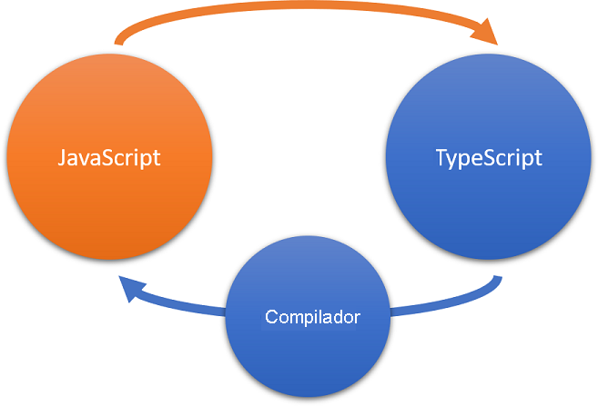

O JavaScript, uma das linguagens de programação mais usadas do mundo, tornou-se a linguagem de programação oficial da Web. Os desenvolvedores o usam para escrever aplicativos multiplataforma que podem ser executados em qualquer plataforma e em qualquer navegador.
Embora o JavaScript seja usado para criar aplicativos multiplataforma, ele não foi concebido para aplicativos grandes envolvendo milhares ou até mesmo milhões de linhas de código. O JavaScript não tem alguns dos recursos de linguagens mais maduras presentes nos aplicativos sofisticados de hoje. Os IDEs (editores de desenvolvimento integrado) podem ter dificuldades para gerenciar o JavaScript e manter essas grandes bases de código.
O TypeScript resolve as limitações do JavaScript, fazendo isso sem comprometer a principal proposta de valor do JavaScript: a capacidade de executar seu código em qualquer lugar e em todas as plataformas, navegadores e hosts.
O TypeScript é uma linguagem de software livre desenvolvida pela Microsoft. Ele é um superconjunto do JavaScript, o que significa que você pode continuar a usar as habilidades de JavaScript que já desenvolveu e adicionar determinados recursos que não estavam disponíveis para você anteriormente.
O principal recurso do TypeScript é o sistema de tipos. No TypeScript, você pode identificar o tipo de dados de uma variável ou parâmetro usando uma dica de tipo. Com as dicas de tipo, você descreve a forma de um objeto, o que proporciona uma melhor documentação e permite que o TypeScript valide se o código está funcionando corretamente.
Por meio da verificação de tipo estático, o TypeScript detecta, no início do desenvolvimento, problemas de código que o JavaScript normalmente não consegue detectar até que o código seja executado no navegador. Os tipos também permitem que você descreva o que o seu código é destinado a fazer. Se você estiver trabalhando em uma equipe, um colega que chegue depois de você também poderá entender o código com facilidade.
Os tipos também potencializam os benefícios de inteligência e produtividade das ferramentas de desenvolvimento, como IntelliSense, navegação baseada em símbolos, ir para definição, localizar todas as referências, preenchimento de instruções e refatoração de código.
A escritura de tipos pode ser opcional no TypeScript, porque a inferência de tipos torna seu código muito poderoso, mesmo sem que você escreva código adicional. Se o TypeScript puder determinar o tipo de dados implicitamente (por exemplo, quando você atribuir um valor a uma variável usando let age = 42), ele inferirá automaticamente o tipo de dados.
Vejamos um exemplo para demonstrar o uso de tipos.
Abra o Playground do TypeScript. Você aprenderá mais sobre o Playground posteriormente neste módulo.
Copie e cole o seguinte exemplo de código JavaScript no painel do TypeScript (à esquerda):
JavaScript
function addNumbers(x, y) {
return x + y;
}
console.log(addNumbers(3, 6));
Observe que o mesmo código aparece no painel .JS (à direita). Esse é o código JavaScript que o TypeScript vai gerar depois de ser compilado.
Selecione Executar para executar o código JavaScript. Em seguida, selecione a guia Logs e observe que o valor 9 é registrado no console. O JavaScript atribuiu o tipo number aos parâmetros x e y e a função retornou um número.
Substitua 3 por "three" (incluindo as aspas) no código do TypeScript e execute-o. O JavaScript agora atribui o string tipo ao parâmetro x e retorna "three6", um tipo string, para o console. Você provavelmente se deparou com essa situação antes e, como você sabe, ela pode causar alguns resultados inesperados.
No painel TypeScript, observe as linhas onduladas vermelhas sob os nomes de parâmetro na função addNumbers. Isso indica que o verificador de tipo identificou erros. Focalize um dos parâmetros e leia a descrição do erro. O TypeScript atribuiu implicitamente um tipo de any, que é o tipo mais amplo, pois ele basicamente pode conter qualquer coisa.
Atualize o código TypeScript para especificar um tipo para cada parâmetro. Substitua x por x: number e y por y: number.
Você observará que os erros agora desapareceram dos parâmetros, mas um novo erro apareceu no primeiro argumento na chamada de função: "Um argumento de tipo 'string' não pode ser atribuído a um parâmetro de tipo 'number'."
Substitua "three" por um número para corrigir o erro. Você pode passar um valor literal, uma variável ou qualquer outro dado e, como o TypeScript entende a forma do seu objeto, ele pode notificá-lo do conflito de tipo durante o desenvolvimento.
Examine o JavaScript e observe que não há nenhuma alteração nele. O TypeScript foi capaz de fornecer a verificação de tipo durante o desenvolvimento, mas isso não teve nenhum impacto sobre o código JavaScript resultante porque ele não dá suporte a tipos.
O TypeScript tem recursos de codificação adicionais que você não encontrará em JavaScript:
Você aprenderá mais sobre alguns desses recursos em módulos posteriores.
O TypeScript é um superconjunto estrito do ECMAScript 2015 (ECMAScript 6 ou ES6). Isso significa que todo o código JavaScript também é código TypeScript, e um programa TypeScript pode consumir o JavaScript de maneira direta.
Os navegadores entendem apenas o JavaScript. Para que seu aplicativo funcione, ao escrevê-lo em TypeScript, você precisa compilar seu código e convertê-lo em JavaScript. Você transforma o código TypeScript em código JavaScript usando o compilador TypeScript ou um transcompilador compatível com TypeScript. O JavaScript resultante é um código simples e limpo que pode ser executado em qualquer lugar em que o JavaScript é executado: em um navegador, no Node.js ou em seus aplicativos.
Diagrama da relação entre JavaScript e TypeScript, em que o TypeScript pode usar JavaScript diretamente, mas deve ser compilado para se tornar JavaScript.
Importante
Quando você trabalha com o TypeScript, lembre-se que, em quase todas as situações, o TypeScript será compilado (ou transformado) em JavaScript e o JavaScript será realmente executado pelo runtime. Você pode usar o TypeScript em todos os projetos que usam JavaScript.
Adotar o TypeScript não é uma opção binária, então você pode migrar sua base de código gradualmente. Você pode começar anotando o JavaScript existente com JSDoc e transformando alguns arquivos para que sejam verificados pelo TypeScript. Você pode preparar a base de código ao longo do tempo para ser totalmente convertida.
Para obter mais informações sobre esse processo, confira Tutoriais do TypeScript: migração do JavaScript.